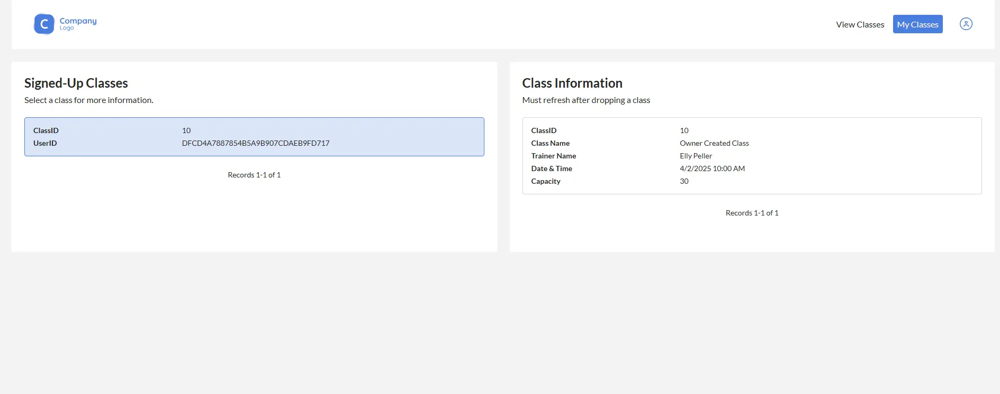
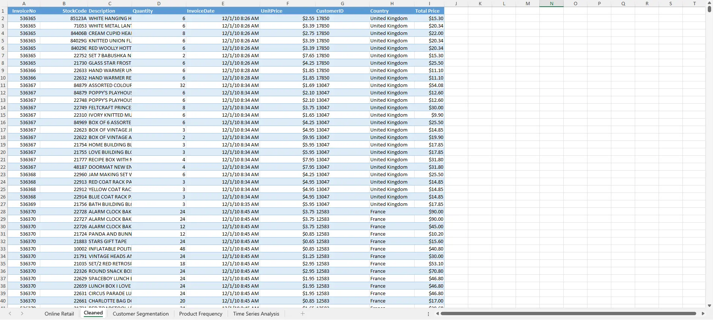
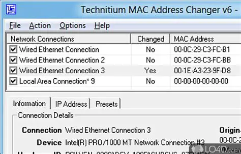
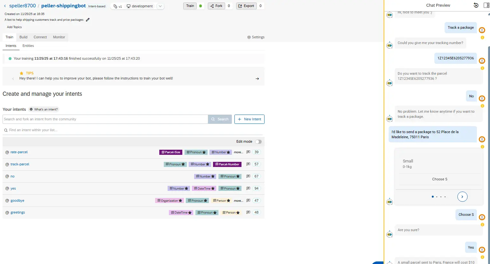
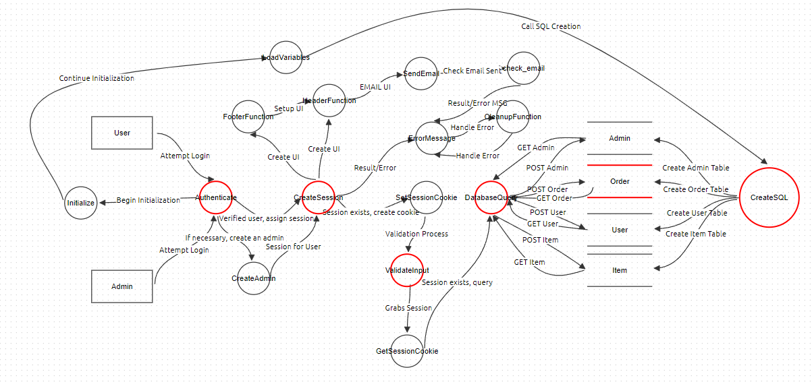
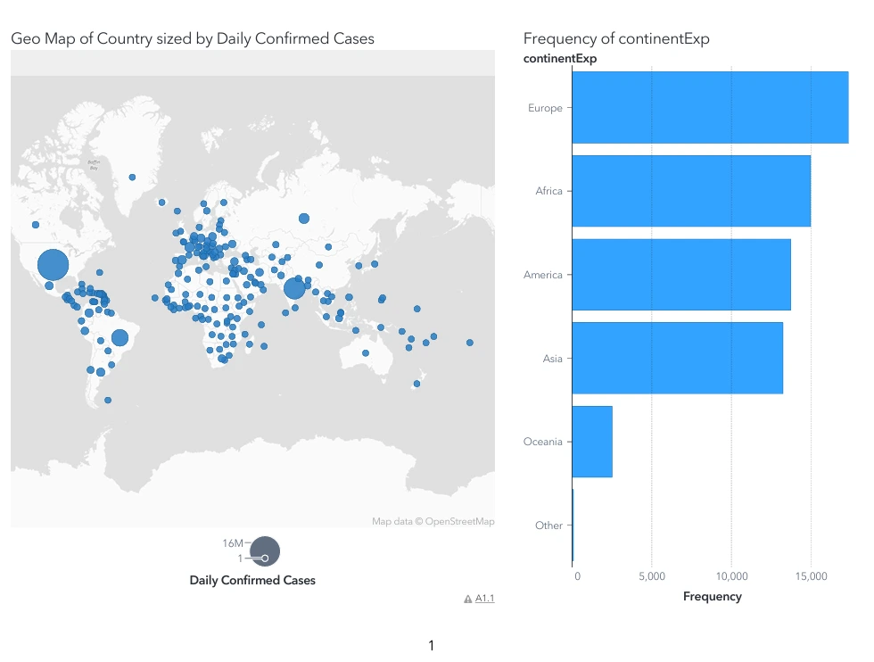
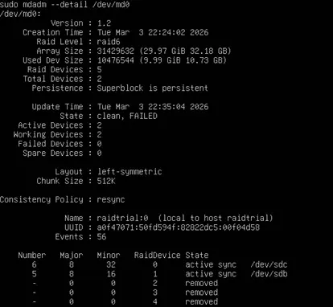
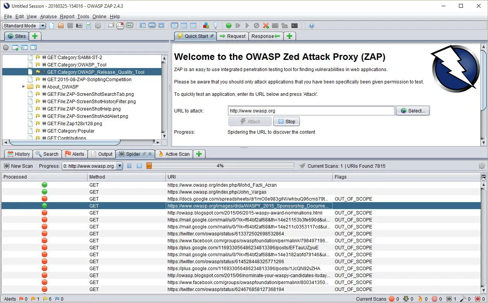

Training Class System
Interviewed clients at Stay Well Studios and created a system using CASPIO and extensive diagramming.
View ReportThese are the most relevant & visual projects, I have way more of course!

Interviewed clients at Stay Well Studios and created a system using CASPIO and extensive diagramming.
View Report
Cleaned 500k rows of European grocery data to analyze UK market entry using PivotTables.
View Report
Hands-on case assignments emphasizing Cybersecurity fundamentals and network defense.
View Work
Built using SAP Conversational AI to help customers track and price packages in real-time.

Threat modeling and security code review for a legacy e-commerce perl-module.

Comprehensive 12-page data report created for stakeholders using the SAS Viya platform.
View Work
Simulated data recovery scenarios on an Ubuntu VM to test disaster recovery protocols.
View Report
Used OWASP ZAP to conduct a penetration test on the Juice Shop web application.
View Report